Chapter 14
Oscillations
Oscillations

14.1 Introduction
14.2 Periodic and oscillatory motions
14.3 Simple harmonic motion
14.4 Simple harmonic motion and uniform circular motion
14.5 Velocity and acceleration in simple harmonic motion
14.6 Force law for simple harmonic motion
14.7 Energy in simple harmonic motion
14.8 Some systems executing SHM
14.9 Damped simple harmonic motion
14.10 Forced oscillations and resonance
Summary
Points to ponder
Exercises
Additional Exercises
Appendix
14.1 Introduction
In our daily life we come across various kinds of motions. You have already learnt about some of them, e.g. rectilinear motion and motion of a projectile. Both these motions are non-repetitive. We have also learnt about uniform circular motion and orbital motion of planets in the solar system. In these cases, the motion is repeated after a certain interval of time, that is, it is periodic. In your childhood you must have enjoyed rocking in a cradle or swinging on a swing. Both these motions are repetitive in nature but different from the periodic motion of a planet. Here, the object moves to and fro about a mean position. The pendulum of a wall clock executes a similar motion. Examples of such periodic to and fro motion abound : a boat tossing up and down in a river, the piston in a steam engine going back and forth, etc. Such a motion is termed as oscillatory motion. In this chapter we study this motion.
The study of oscillatory motion is basic to physics; its concepts are required for the understanding of many physical phenomena. In musical instruments like the sitar, the guitar or the violin, we come across vibrating strings that produce pleasing sounds. The membranes in drums and diaphragms in telephone and speaker systems vibrate to and fro about their mean positions. The vibrations of air molecules make the propagation of sound possible. In a solid, the atoms vibrate about their equilibrium positions, the average energy of vibrations being proportional to temperature. AC power supply give voltage that oscillates alternately going positive and negative about the mean value (zero).
The description of a periodic motion in general, and oscillatory motion in particular, requires some fundamental concepts like period, frequency, displacement, amplitude and phase. These concepts are developed in the next section.
14.2 Periodic and Oscillatory motions
Fig. 14.1 shows some periodic motions. Suppose an insect climbs up a ramp and falls down it comes back to the initial point and repeats the process identically. If you draw a graph of its height above the ground versus time, it would look something like Fig. 14.1 (a). If a child climbs up a step, comes down, and repeats the process, its height above the ground would look like that in Fig. 14.1 (b). When you play the game of bouncing a ball off the ground, between your palm and the ground, its height versus time graph would look like the one in Fig. 14.1 (c). Note that both the curved parts in Fig. 14.1 (c) are sections of a parabola given by the Newton’s equation of motion (see section 3.6),
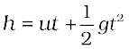 for downward motion, and
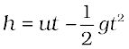 for upward motion,
with different values of u in each case. These are examples of periodic motion. Thus, a motion that repeats itself at regular intervals of time is called periodic motion.
(a)
(b)
Fig. 14.1 Examples of periodic motion. The period T is shown in each case.
Very often the body undergoing periodic motion has an equilibrium position somewhere inside its path. When the body is at this position no net external force acts on it. Therefore, if it is left there at rest, it remains there forever. If the body is given a small displacement from the position, a force comes into play which tries to bring the body back to the equilibrium point, giving rise to oscillations or vibrations. For example, a ball placed in a bowl will be in equilibrium at the bottom. If displaced a little from the point, it will perform oscillations in the bowl. Every oscillatory motion is periodic, but every periodic motion need not be oscillatory. Circular motion is a periodic motion, but it is not oscillatory.
There is no significant difference between oscillations and vibrations. It seems that when the frequency is small, we call it oscillation (like the oscillation of a branch of a tree), while when the frequency is high, we call it vibration (like the vibration of a string of a musical instrument).
Simple harmonic motion is the simplest form of oscillatory motion. This motion arises when the force on the oscillating body is directly proportional to its displacement from the mean position, which is also the equilibrium position. Further, at any point in its oscillation, this force is directed towards the mean position.
In practice, oscillating bodies eventually come to rest at their equilibrium positions, because of the damping due to friction and other dissipative causes. However, they can be forced to remain oscillating by means of some external periodic agency. We discuss the phenomena of damped and forced oscillations later in the chapter.
Any material medium can be pictured as a collection of a large number of coupled oscillators. The collective oscillations of the constituents of a medium manifest themselves as waves. Examples of waves include water waves, seismic waves, electromagnetic waves. We shall study the wave phenomenon in the next chapter.
14.2.1 Period and frequency
We have seen that any motion that repeats itself at regular intervals of time is called periodic motion. The smallest interval of time after which the motion is repeated is called its period. Let us denote the period by the symbol T. Its S.I. unit is second. For periodic motions, which are either too fast or too slow on the scale of seconds, other convenient units of time are used. The period of vibrations of a quartz crystal is expressed in units of microseconds (10–6 s) abbreviated as µs. On the other hand, the orbital period of the planet Mercury is 88 earth days. The Halley’s comet appears after every 76 years.
The reciprocal of T gives the number of repetitions that occur per unit time. This quantity is called the frequency of the periodic motion. It is represented by the symbol ν. The relation between ν and T is
ν = 1/T (14.1)
The unit of ν is thus s–1. After the discoverer of radio waves, Heinrich Rudolph Hertz (1857-1894), a special name has been given to the unit of frequency. It is called hertz (abbreviated as Hz). Thus,
1 hertz = 1 Hz =1 oscillation per second =1s–1 (14.2)
Note, that the frequency, ν, is not necessarily an integer.
Example 14.1 On an average a human heart is found to beat 75 times in a minute. Calculate its frequency and period.
Answer The beat frequency of heart = 75/(1 min)
= 75/(60 s)
= 1.25 s–1
= 1.25 Hz
The time period T = 1/(1.25 s–1)
= 0.8 s
14.2.2 Displacement
In section 4.2, we defined displacement of a particle as the change in its position vector. In this chapter, we use the term displacement in a more general sense. It refers to change with time of any physical property under consideration. For example, in case of rectilinear motion of a steel ball on a surface, the distance from the starting point as a function of time is its position displacement. The choice of origin is a matter of convenience. Consider a block attached to a spring, the other end of which is fixed to a rigid wall [see Fig.14.2(a)]. Generally it is convenient to measure displacement of the body from its equilibrium position. For an oscillating simple pendulum, the angle from the vertical as a function of time may be regarded as a displacement variable [see Fig.14.2(b)]. The term displacement is not always to be referred
Fig.14.2(b) An oscillating simple pendulum; its motion can be described in terms of angular displacement θ from the vertical.
in the context of position only. There can be many other kinds of displacement variables. The voltage across a capacitor, changing with time in an a.c. circuit, is also a displacement variable. In the same way, pressure variations in time in the propagation of sound wave, the changing electric and magnetic fields in a light wave are examples of displacement in different contexts. The displacement variable may take both positive and negative values. In experiments on oscillations, the displacement is measured for different times.
The displacement can be represented by a mathematical function of time. In case of periodic motion, this function is periodic in time. One of the simplest periodic functions is given by
f (t) = A cos ωt (14.3a)
If the argument of this function, ωt, is increased by an integral multiple of 2π radians, the value of the function remains the same. The function f (t) is then periodic and its period, T, is given by
 (14.3b)
(14.3b)
Thus, the function f (t) is periodic with period T,
f (t) = f (t+T )
The same result is obviously correct if we consider a sine function, f (t ) = A sin ωt. Further, a linear combination of sine and cosine functions like,
f (t) = A sin ωt + B cos ωt (14.3c)
is also a periodic function with the same period T. Taking,
A = D cos φ and B = D sin φ
Eq. (14.3c) can be written as,
f (t) = D sin (ωt + φ ) , (14.3d)
Here D and φ are constant given by
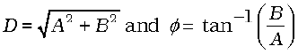
The great importance of periodic sine and cosine functions is due to a remarkable result proved by the French mathematician, Jean Baptiste Joseph Fourier (1768-1830): Any periodic function can be expressed as a superposition of sine and cosine functions of different time periods with suitable coefficients.
Example 14.2 Which of the following functions of time represent (a) periodic and (b) non-periodic motion? Give the period for each case of periodic motion [ω is any positive constant].
(i) sin ωt + cos ωt
(ii) sin ωt + cos 2 ωt + sin 4 ωt
(iii) e–ωt
(iv) log (ωt)
Answer
(i) sin ωt + cos ωt is a periodic function, it can also be written as 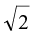 sin (ωt + π/4).
Now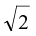 sin (ωt + π/4)= sin (ωt + π/4+2π)
=  sin [ω (t + 2π/ω) + π/4]
sin [ω (t + 2π/ω) + π/4]
The periodic time of the function is 2π/ω.
(ii) This is an example of a periodic motion. It can be noted that each term represents a periodic function with a different angular frequency. Since period is the least interval of time after which a function repeats its value, sin ωt has a period T0= 2π/ω ; cos 2 ωt has a period π/ω =T0/2; and sin 4 ωt has a period 2π/4ω = T0/4. The period of the first term is a multiple of the periods of the last two terms. Therefore, the smallest interval of time after which the sum of the three terms repeats is T0, and thus the sum is a periodic function with a period 2π/ω.
(iii) The function e–ωt is not periodic, it decreases monotonically with increasing time and tends to zero as t → ∞ and thus, never repeats its value.
(iv) The function log(ωt) increases mono-tonically with time t. It, therefore, never repeats its value and is a non-periodic function. It may be noted that as t → ∞, log(ωt) diverges to ∞. It, therefore, cannot represent any kind of physical displacement.
14.3 Simple harmonic motion
Consider a particle oscillating back and forth about the origin of an x-axis between the limits +A and –A as shown in Fig. 14.3.

This oscillatory motion is said to be simple harmonic if the displacement x of the particle from the origin varies with time as :
x (t) = A cos (ω t + φ) (14.4)
where A, ω and φ are constants.
Thus, simple harmonic motion (SHM) is not any periodic motion but one in which displacement is a sinusoidal function of time. Fig. 14.4 shows what the positions of a particle executing SHM are at discrete value of time, each interval of time being T/4 where T is the period of motion.
Fig. 14.5 plots the graph of x versus t, which gives the values of displacement as a continuous function of time.
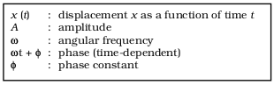
Fig. 14.6 The meaning of standard symbols in Eq. (14.4)
The amplitutde A of SHM is the magnitude of maximum displacement of the particle. [Note, A can be taken to be positive without any loss of generality]. As the cosine function of time varies from +1 to –1, the displacement varies between the extremes A and – A. Two simple harmonic motions may have same ω and φ but different amplitudes Aand B, as shown in Fig. 14.7 (a).
While the amplitude A is fixed for a given SHM, the state of motion (position and velocity) of the particle at any time t is determined by the argument (ωt + φ) in the cosine function. This time-dependent quantity, (ωt + φ) is called the phase of the motion. The value of plase at t = 0 is φ and is called the phase constant (or phase angle). If the amplitude is known, φ can be determined from the displacement at t = 0. Two simple harmonic motions may have the same A and ω but different phase angle φ, as shown in Fig. 14.7 (b).
Finally, the quantity ω can be seen to be related to the period of motion T. Taking, for simplicity, φ = 0 in Eq. (14.4), we have
x(t) = A cos ωt (14.5)
Since the motion has a period T, x (t) is equal to x (t + T). That is,
A cos ωt = A cos ω (t + T) (14.6)
Now the cosine function is periodic with period 2π, i.e., it first repeats itself when the argument changes by 2π. Therefore,
ω(t + T ) = ωt + 2π
that is ω = 2π/ T (14.7)
ω is called the angular frequency of SHM. Its S.I. unit is radians per second. Since the frequency of oscillations is simply 1/T, ω is 2π times the frequency of oscillation. Two simple harmonic motions may have the same A and φ, but different ω, as seen in Fig. 14.8. In this plot the curve (b) has half the period and twice the frequency of the curve (a).
Example 14.3 Which of the following functions of time represent (a) simple harmonic motion and (b) periodic but not simple harmonic? Give the period for each case.
(1) sin ωt – cos ωt
(2) sin2 ωt
Answer
(a) sin ωt – cos ωt
= sin ωt – sin (π/2 – ωt)
= 2 cos (π/4) sin (ωt – π/4)
= √2 sin (ωt – π/4)
This function represents a simple harmonic motion having a period T = 2π/ω and a phase angle (–π/4) or (7π/4)
(b) sin2 ωt
= ½ – ½ cos 2 ωt
The function is periodic having a period T = π/ω. It also represents a harmonic motion with the point of equilibrium occurring at ½ instead of zero.
14.4 Simple harmonic motion and uniform circular motion
In this section we show that the projection of uniform circular motion on a diameter of the circle follows simple harmonic motion. A simple experiment (Fig. 14.9) helps us visualize this connection. Tie a ball to the end of a string and make it move in a horizontal plane about a fixed point with a constant angular speed. The ball would then perform a uniform circular motion in the horizontal plane. Observe the ball sideways or from the front, fixing your attention in the plane of motion. The ball will appear to execute to and fro motion along a horizontal line with the point of rotation as the midpoint. You could alternatively observe the shadow of the ball on a wall which is perpendicular to the plane of the circle. In this process what we are observing is the motion of the ball on a diameter of the circle normal to the direction of viewing.
Fig. 14.10 describes the same situation mathematically. Suppose a particle P is moving uniformly on a circle of radius A with angular speed ω. The sense of rotation is anticlockwise. The initial position vector of the particle, i.e., the
vector 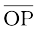 at t = 0 makes an angle of φ with the positive direction of x-axis. In time t, it will cover a further angle ωt and its position vector will make an angle of ωt + φ with the +ve x-axis. Next consider the projection of the position vector OP on the x-axis. This will be OP′. The position of P′ on the x-axis, as the particle P moves on the circle, is given by
x(t) = A cos (ωt + φ )
which is the defining equation of SHM. This shows that if P moves uniformly on a circle, its projection P′ on a diameter of the circle executes SHM. The particle P and the circle on which it moves arc sometimes referred to as the reference particle and the reference circle respectively.
We can take projection of the motion of P on any diameter, say the y-axis. In that case, the displacement y(t) of P′ on the y-axis is given by
y = A sin (ωt + φ)
which is also an SHM of the same amplitude as that of the projection on x-axis, but differing by a phase of π/2.
In spite of this connection between circular motion and SHM, the force acting on a particle in linear simple harmonic motion is very different from the centripetal force needed to keep a particle in uniform circular motion.
Example 14.4 Fig. 14.10 depicts two circular motions. The radius of the circle, the period of revolution, the initial position and the sense of revolution are indicated on the figures. Obtain the simple harmonic motions of the x-projection of the radius vector of the rotating particle P in each case.
Answer
(a) At t = 0, OP makes an angle of 45o = π/4 rad with the (positive direction of) x-axis. After time t, it covers an angle  in the anticlockwise sense, and makes an angle of 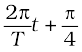 with the x-axis.
in the anticlockwise sense, and makes an angle of 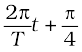 with the x-axis.
The projection of OP on the x-axis at time t is given by,
x (t) = A cos ( 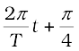 )
For T = 4 s,
x(t) = A cos 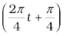
which is a SHM of amplitude A, period 4 s, and an initial phase* = 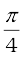 .
(b) In this case at t = 0, OP makes an angle of 90o = 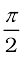 with the x-axis. After a time t, it covers an angle of  in the clockwise sense and makes an angle of 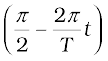 with the x-axis. The projection of OP on the x-axis at time t is given by
in the clockwise sense and makes an angle of 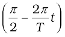 with the x-axis. The projection of OP on the x-axis at time t is given by
*The natural unit of angle is radian, defined through the ratio of arc to radius. Angle is a dimensionless quantity. Therefore it is not always necessary to mention the unit ‘radian’ when we use π, its multiples or submultiples. The conversion between radian and degree is not similar to that between metre and centimetre or mile. If the argument of a trigonometric function is stated without units, it is understood that the unit is radian. On the other hand, if degree is to be used as the unit of angle, then it must be shown explicitly. For example, sin(150) means sine of 15 degree, but sin(15) means sine of 15 radians. Hereafter, we will often drop ‘rad’ as the unit, and it should be understood that whenever angle is mentioned as a numerical value, without units, it is to be taken as radians.
x(t) = B cos 
= B sin (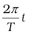)
For T = 30 s,
x(t) = B sin 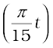
Writing this as x (t) = B cos 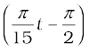, and comparing with Eq. (14.4). We find that this represents a SHM of amplitude B, period 30 s, and an initial phase of 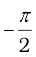.
14.5 Velocity and acceleration in simple harmonic motion
The speed of a particle v in uniform circular motion is its angular speed ω times the radius of the circle A.
v = ω A (14.8)
The direction of velocity 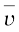 at a time t is along the tangent to the circle at the point where the particle is located at that instant. From the geometry of Fig. 14.11, it is clear that the velocity of the projection particle P′ at time t is
v(t) = –ωA sin (ωt + φ ) (14.9)
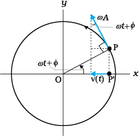
Fig. 14.11 The velocity, v (t), of the particle P′ is the projection of the velocity  of the reference particle, P.
of the reference particle, P.
where the negative sign shows that v (t) has a direction opposite to the positive direction of x-axis. Eq. (14.9) gives the instantaneous velocity of a particle executing SHM, where displacement is given by Eq. (14.4). We can, of course, obtain this equation without using geometrical argument, directly by differentiating (Eq. 14.4) with respect of t:
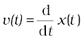 (14.10)
The method of reference circle can be similarly used for obtaining instantaneous acceleration of a particle undergoing SHM. We know that the centripetal acceleration of a particle P in uniform circular motion has a magnitude v2/A or ω2A, and it is directed towards the centre i.e., the direction is along PO. The instantaneous acceleration of the projection particle P′ is then (See Fig. 14.12)
a (t) = –ω2A cos (ωt + φ)
= –ω2x (t) (14.11)
Eq. (14.11) gives the acceleration of a particle in SHM. The same equation can again be obtained directly by differentiating velocity v(t) given by Eq. (14.9) with respect to time:
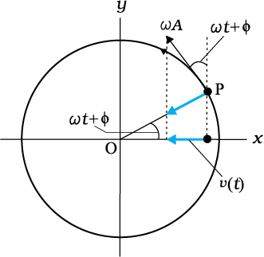
Fig. 14.12 The acceleration, a(t), of the particle P′ is the projection of the acceleration a of the reference particle P.
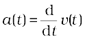 (14.12)
We note from Eq. (14.11) the important property that acceleration of a particle in SHM is proportional to displacement. For x(t) > 0, a(t) < 0 and for x(t) < 0, a(t) > 0. Thus, whatever the value of x between –A and A, the acceleration a(t) is always directed towards the centre.
For simplicity, let us put φ = 0 and write the expression for x (t), v (t) and a(t)
x(t) = A cos ωt, v(t) = – ω Asin ωt, a(t)=–ω2 A cos ωt
The corresponding plots are shown in Fig. 14.13. All quantitites vary sinusoidally with time; only their maxima differ and the different plots differ in phase. x varies between –A to A; v(t) varies from –ωA to ωA and a(t) from –ω2A to ω2A. With respect to displacement plot, velocity plot has a phase difference of π/2 and acceleration plot has a phase difference of π.
Example 14.5 A body oscillates with SHM according to the equation (in SI units),
x = 5 cos [2π t + π/4].
At t = 1.5 s, calculate the (a) displacement, (b) speed and (c) acceleration of the body.
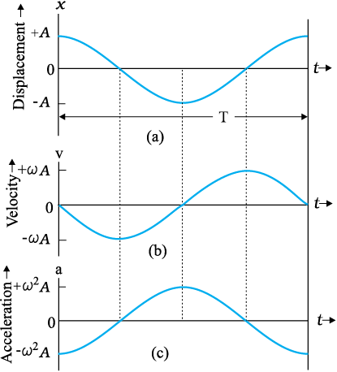
Fig. 14.13 Displacement, velocity and acceleration of a particle in simple harmonic motion have the same period T, but they differ in phase
Answer The angular frequency ω of the body
= 2π s–1 and its time period T = 1 s.
At t = 1.5 s
(a) displacement = (5.0 m) cos [(2π s–1) × 1.5 s + π/4]
= (5.0 m) cos [(3π + π/4)]
= –5.0 × 0.707 m
= –3.535 m
(b) Using Eq. (14.9), the speed of the body
= – (5.0 m)(2π s–1) sin [(2π s–1) ×1.5 s + π/4]
= – (5.0 m)(2π s–1) sin [(3π + π/4)]
= 10π × 0.707 m s–1
= 22 m s–1
(c) Using Eq.(14.10), the acceleration of the body
= –(2π s–1)2 × displacement
= – (2π s–1)2 × (–3.535 m)
= 140 m s–2
14.6 Force law for simple harmonic motion
Using Newton’s second law of motion, and the expression for acceleration of a particle undergoing SHM (Eq. 14.11), the force acting on a particle of mass m in SHM is
F (t) = ma
= –mω2 x (t)
i.e., F (t) = –k x (t) (14.13)
where k = mω2 (14.14a)
or 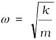 (14.14b)
Like acceleration, force is always directed towards the mean position - hence it is sometimes called the restoring force in SHM. To summarize the discussion so far, simple harmonic motion can be defined in two equivalent ways, either by Eq. (14.4) for displacement or by Eq. (14.13) that gives its force law. Going from Eq. (14.4) to Eq. (14.13) required us to differentiate two times. Likewise by integrating the force law Eq. (14.13) two times, we can get back Eq. (14.4).
Note that the force in Eq. (14.13) is linearly proportional to x(t). A particle oscillating under such a force is, therefore, calling a linear harmonic oscillator. In the real world, the force may contain small additional terms proportional to x2, x3, etc. These then are called non-linear oscillators.
Example 14.6 Two identical springs of spring constant k are attached to a block of mass m and to fixed supports as shown in Fig. 14.14. Show that when the mass is displaced from its equilibrium position on either side, it executes a simple harmonic motion. Find the period of oscillations.
Fig. 14.14
Answer Let the mass be displaced by a small distance x to the right side of the equilibrium position, as shown in Fig. 14.15. Under this situation the spring on the left side gets
Fig. 14.15
elongated by a length equal to x and that on the right side gets compressed by the same length. The forces acting on the mass are then,
F1 = –k x (force exerted by the spring on the left side, trying to pull the mass towards the mean position)
F2 = –k x (force exerted by the spring on the right side, trying to push the mass towards the mean position)
The net force, F, acting on the mass is then given by,
F = –2kx
Hence the force acting on the mass is proportional to the displacement and is directed towards the mean position; therefore, the motion executed by the mass is simple harmonic. The time period of oscillations is,

14.7 Energy in simple harmonic motion
Both kinetic and potential energies of a particle in SHM vary between zero and their maximum values.
In section14.5 we have seen that the velocity of a particle executing SHM, is a periodic function of time. It is zero at the extreme positions of displacement. Therefore, the kinetic energy (K) of such a particle, which is defined as
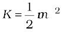
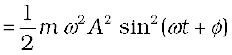
 (14.15)
(14.15)
is also a periodic function of time, being zero when the displacement is maximum and maximum when the particle is at the mean position. Note, since the sign of v is immaterial in K, the period of K is T/2.
What is the potential energy (U) of a particle executing simple harmonic motion? In Chapter 6, we have seen that the concept of potential energy is possible only for conservative forces. The spring force F = –kx is a conservative force, with associated potential energy
 (14.16)
(14.16)
Hence the potential energy of a particle executing simple harmonic motion is,
U(x) = 
 (14.17)
(14.17)
Thus, the potential energy of a particle executing simple harmonic motion is also periodic, with period T/2, being zero at the mean position and maximum at the extreme displacements.
It follows from Eqs. (14.15) and (14.17) that the total energy, E, of the system is,
E = U + K
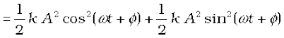

Using the familiar trigonometric identity, the value of the expression in the brackets is unity. Thus,
 (14.18)
(14.18)
The total mechanical energy of a harmonic oscillator is thus independent of time as expected for motion under any conservative force. The time and displacement dependence of the potential and kinetic energies of a linear simple harmonic oscillator are shown in Fig. 14.16.
Observe that both kinetic energy and potential energy in SHM are seen to be always positive in Fig. 14.16. Kinetic energy can, of course, be never negative, since it is proportional to the square of speed. Potential energy is positive by choice of the undermined constant in potential energy. Both kinetic energy and potential energy peak twice during each period of SHM. For x = 0, the energy is kinetic; at the extremes x = ±A, it is all potential energy. In the course of motion between these limits, kinetic energy increases at the expense of potential energy or vice-versa.
Example 14.7 A block whose mass is 1 kg is fastened to a spring. The spring has a spring constant of 50 N m–1. The block is pulled to a distance x = 10 cm from its equilibrium position at x = 0 on a frictionless surface from rest at t = 0. Calculate the kinetic, potential and total energies of the block when it is 5 cm away from the mean position.
Answer The block executes SHM, its angular frequency, as given by Eq. (14.14b), is


= 7.07 rad s–1
Its displacement at any time t is then given by,
x(t) = 0.1 cos (7.07t)
Therefore, when the particle is 5 cm away from the mean position, we have
0.05 = 0.1 cos (7.07t)
Or cos (7.07t) = 0.5 and hence
sin (7.07t) 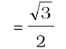 = 0.866
Then, the velocity of the block at x = 5 cm is
= 0.1 × 7.07 × 0.866 m s–1
= 0.61 m s–1
Hence the K.E. of the block,

= ½[1kg × (0.6123 m s–1 )2 ]
= 0.19 J
The P.E. of the block,

= ½(50 N m–1 × 0.05 m × 0.05 m)
= 0.0625 J
The total energy of the block at x = 5 cm,
= K.E. + P.E.
= 0.25 J
we also know that at maximum displacement, K.E. is zero and hence the total energy of the system is equal to the P.E. Therefore, the total energy of the system,
= ½(50 N m–1 × 0.1 m × 0.1 m )
= 0.25 J
which is same as the sum of the two energies at a displacement of 5 cm. This is in conformity with the principle of conservation of energy.
14.8 Some systems executing simple harmonic motion
There are no physical examples of absolutely pure simple harmonic motion. In practice we come across systems that execute simple harmonic motion approximately under certain conditions. In the subsequent part of this section, we discuss the motion executed by some such systems.
14.8.1 Oscillations due to a Spring
The simplest observable example of simple harmonic motion is the small oscillations of a block of mass m fixed to a spring, which in turn is fixed to a rigid wall as shown in Fig. 14.17. The block is placed on a frictionless horizontal surface. If the block is pulled on one side and is released, it then executes a to and fro motion about a mean position. Let x = 0, indicate the position of the centre of the block when the spring is in equilibrium. The positions marked as –A and +A indicate the maximum displacements to the left and the right of the mean position. We have already learnt that springs have special properties, which were first discovered by the English physicist Robert Hooke. He had shown that such a system when deformed, is subject to a restoring force, the magnitude of which is proportional to the deformation or the displacement and acts in opposite direction. This is known as Hooke’s law (Chapter 9). It holds good for displacements small in comparison to the length of the spring. At any time t, if the displacement of the block from its mean position is x, the restoring force F acting on the block is,
F (x) = –k x (14.19)

The constant of proportionality, k, is called the spring constant, its value is governed by the elastic properties of the spring. A stiff spring has large k and a soft spring has small k. Equation (14.19) is same as the force law for SHM and therefore the system executes a simple harmonic motion. From Eq. (14.14) we have,
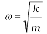 (14.20)
and the period, T, of the oscillator is given by,
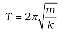 (14.21)
Stiff springs have high value of k (spring constant). A block of small mass m attached to a stiff spring will have, according to Eq. (14.20), large oscillation frequency, as expected physically.
Example 14.8 A 5 kg collar is attached to a spring of spring constant 500 N m–1. It slides without friction over a horizontal rod. The collar is displaced from its equilibrium position by 10.0 cm and released. Calculate (a) the period of oscillation,
(b) the maximum speed and
(c) maximum acceleration of the collar.
Answer (a) The period of oscillation as given by Eq. (14.21) is,
 = 2π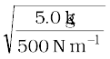
= 2π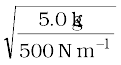
= (2π/10) s
= 0.63 s
(b) The velocity of the collar executing SHM is given by,
v(t) = –Aω sin (ωt + φ)
The maximum speed is given by,
vm = Aω
= 0.1 × 
= 0.1 ×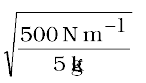
= 1 m s–1
and it occurs at x = 0
(c) The acceleration of the collar at the displacement x (t) from the equilibrium is given by,
a (t) = –ω2 x(t)
= – 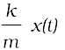
Therefore the maximum acceleration is,
amax = ω2 A
= 
= 10 m s–2
and it occurs at the extremities.
14.8.2 The Simple Pendulum
It is said that Galileo measured the periods of a swinging chandelier in a church by his pulse beats. He observed that the motion of the chandelier was periodic. The system is a kind of pendulum. You can also make your own pendulum by tying a piece of stone to a long unstretchable thread, approximately 100 cm long. Suspend your pendulum from a suitable support so that it is free to oscillate. Displace the stone to one side by a small distance and let it go. The stone executes a to and fro motion, it is periodic with a period of about two seconds.
We shall show that this periodic motion is simple harmonic for small displacements from the mean position. Consider simple pendulum — a small bob of mass m tied to an inextensible mass less string of length L. The other end of the string is fixed to a support in the ceiling. The bob oscillates in a plane about the vertical line through the support. Fig. 14.18(a) shows this system. Fig. 14.18(b) is a kind of ‘free-body’ diagram of the simple pendulum showing the forces acting on the bob.
Let θ be the angle made by the string with the vertical. When the bob is at the mean position, θ = 0
There are only two forces acting on the bob; the tension T along the string and the vertical force due to gravity (=mg). The force mg can be resolved into the component mg cosθ along the string and mg sinθ perpendicular to it. Since the motion of the bob is along a circle of length L and centre at the support point, the bob has a radial acceleration (ω2L) and also a tangental acceleration; the latter arises since motion along the arc of the circle is not uniform.
(a)
(b)
Fig. 14.18 (a) A bob oscillating about its mean position. (b) The radial force T-mg cosθ provides centripetal force but no torque about the support. The tangential force mgsinθ provides the restoring torque.
The radial acceleration is provided by the net radial force T –mg cosθ, while the tangential acceleration is provided by mg sinθ. It is more convenient to work with torque about the support since the radial force gives zero torque. Torque τ about the support is entirely provided by the tangental component of force
τ = –L (mg sinθ ) (14.22)
This is a restoring torque that tends to reduce angular displacement — hence the negative sign. By Newton’s law of rotational motion,
τ = I α (14.23)
where I is the moment of inertia of the system about the support and α is the angular acceleration. Thus,
I α = –m g sin θ L (14.24)
Or,
α = (14.25)
We can simplify Eq. (14.25) if we assume that the displacement θ is small. We know that sin θ can be expressed as,
(14.26)
where θ is in radians.
Now if θ is small, sin θ can be approximated by θ and Eq. (14.25) can then be written as,
 (14.27)
(14.27)
In Table 14.1, we have listed the angle θ in degrees, its equivalent in radians, and the value of the function sin θ . From this table it can be seen that for θ as large as 20 degrees, sin θ is nearly the same as θ expressed in radians.
SHM - how small should the amplitude be?
When you perform the experiment to determine the time period of a simple pendulum, your teacher tells you to keep the amplitude small. But have you ever asked how small is small? Should the amplitude to 50, 20, 10 or 0.50? Or could it be 100, 200 or 300?
To appreciate this, it would be better to measure the time period for different amplitudes, up to large amplitudes. Of course, for large oscillations, you will have to take care that the pendulum oscillates in a vertical plane. Let us denote the time period for small-amplitude oscillations as T (0) and write the time period for amplitude θ0 as T(θ0) = cT (0), where c is the multiplying factor. If you plot a graph of c versus θ0, you will get values somewhat like this:
θ0 : 200 450 500 700 900
c : 1.02 1.04 1.05 1.10 1.18
This means that the error in the time period is about 2% at an amplitude of 200, 5% at an amplitude of 500, and 10% at an amplitude of 700 and 18% at an amplitude of 900.
In the experiment, you will never be able to measure T (0) because this means there are no oscillations. Even theoretically,
sin θ is exactly equal to θ only for θ = 0. There will be some inaccuracy for all other values of θ . The difference increases with increasing θ . Therefore we have to decide how much error we can tolerate. No measurement is ever perfectly accurate. You must also consider questions like these: What is the accuracy of the stopwatch? What is your own accuracy in starting and stopping the stopwatch? You will realise that the accuracy in your measurements at this level is never better than 5% or 10%. Since the above table shows that the time period of the pendulum increases hardly by 5% at an amplitude of 500 over its low amplitude value, you could very well keep the amplitude to be 50° in your experiments.
Equation (14.27) is mathematically, identical to Eq. (14.11) except that the variable is angular displacement. Hence we have proved that for small θ, the motion of the bob is simple harmonic. From Eqs. (14.27) and (14.11),
Table 14.1 sin θ as a function of angle θ

and
(14.28)
Now since the string of the simple pendulum is mass less, the moment of inertia I is simply mL2. Eq. (14.28) then gives the well-known formula for time period of a simple pendulum.
(14.29)
Example 14.9 What is the length of a simple pendulum, which ticks seconds ?
Answer From Eq. (14.29), the time period of a simple pendulum is given by,

From this relation one gets,
The time period of a simple pendulum, which ticks seconds, is 2 s. Therefore, for g = 9.8 m s–2 and T = 2 s, L is
= 1 m
14.9 Damped simple harmonic motion
We know that the motion of a simple pendulum, swinging in air, dies out eventually. Why does it happen ? This is because the air drag and the friction at the support oppose the motion of the pendulum and dissipate its energy gradually. The pendulum is said to execute damped oscillations. In dampled oscillations, the energy of the system is dissipated continuously; but, for small damping, the oscillations remain approximately periodic. The dissipating forces are generally the frictional forces. To understand the effect of such external forces on the motion of an oscillator, let us consider a system as shown in Fig. 14.19. Here a block of mass m connected to an elastic spring of spring constant k oscillates vertically. If the block is pushed down a little and released, its angular frequency of oscillation is  , as seen in Eq. (14.20). However, in practice, the surrounding medium (air) will exert a damping force on the motion of the block and the mechanical energy of the block-spring system will decrease. The energy loss will appear as heat of the surrounding medium (and the block also) [Fig. 14.19].
, as seen in Eq. (14.20). However, in practice, the surrounding medium (air) will exert a damping force on the motion of the block and the mechanical energy of the block-spring system will decrease. The energy loss will appear as heat of the surrounding medium (and the block also) [Fig. 14.19].
The damping force depends on the nature of the surrounding medium. If the block is immersed in a liquid, the magnitude of damping will be much greater and the dissipation of energy much faster. The damping force is generally proportional to velocity of the bob. [Remember Stokes’ Law, Eq. (10.19)] and acts opposite to the direction of velocity. If the damping force is denoted by Fd, we have
Fd = –b v (14.30)
where the positive constant b depends on characteristics of the medium (viscosity, for example) and the size and shape of the block, etc. Eq. (14.30) is usually valid only for small velocity.
Fig. 14.19 The viscous surrounding medium exerts a damping force on an oscillating spring, eventually bringing it to rest.
When the mass m is attached to the spring and released, the spring will elongate a little and the mass will settle at some height. This position, shown by O in Fig 14.20, is the equilibrium position of the mass. If the mass is pulled down or pushed up a little, the restoring force on the block due to the spring is FS = –kx, where x is the displacement* of the mass from its equilibrium position. Thus, the total force acting on the mass at any time t, is F = –kx –bv.
If a(t) is the acceleration of mass at time t, then by Newton’s Law of Motion applied along the direction of motion, we have
m a(t) = –k x(t) – b v(t) (14.31)
Here we have dropped the vector notation because we are discussing one-dimensional motion.
Using the first and second derivatives of x (t) for v (t) and a (t) respectively, we have
(14.32)
The solution of Eq. (14.32) describes the motion of the block under the influence of a damping force which is proportional to velocity. The solution is found to be of the form
x(t) = A e–b t/2m cos (ω′t + φ ) (14.33)
where a is the amplitude and ω ′ is the angular frequency of the damped oscillator given by,
(14.34)
In this function, the cosine function has a period 2π/ω′ but the function x(t) is not strictly periodic because of the factor e–b t/2m which decreases continuously with time. However, if the decrease is small in one time period T, the motion represented by Eq. (14.33) is approximately periodic.
The solution, Eq. (14.33), can be graphically represented as shown in Fig. 14.20. We can regard it as a cosine function whose amplitude, which is Ae–b t/2m, gradually decreases with time.
Now the mechanical energy of the undamped oscillator is 1/2 kA2. For a damped oscillator, the amplitude is not constant but depends on time. For small damping, we may use the same expression but regard the amplitude as A e–bt/2m.
 (14.35)
(14.35)
Equation (14.35) shows that the total energy of the system decreases exponentially with time. Note that small damping means that the dimensionless ratio is much less than 1.
Of course, an expected, if we put b = 0, all equations of a damped oscillator in this section reduce to the corresponding equations of an undamped oscillator.
Fig. 14.20 A damped oscillator is approximately periodic with decreasing amplitude of oscillation. With greater damping, oscillations die out faster.
* Under gravity, the block will be at a certain equilibrium position O on the spring; x here represents the displacement from that position.
Example 14.10 For the damped oscillator shown in Fig. 14.20, the mass m of the block is 200 g, k = 90 N m–1 and the damping constant b is 40 g s–1. Calculate (a) the period of oscillation, (b) time taken for its amplitude of vibrations to drop to half of its initial value and (c) the time taken for its mechanical energy to drop to half its initial value.
Answer (a) We see that km = 90×0.2 = 18 kg N m–1 = kg2 s–2; therefore  = 4.243 kg s–1, and b = 0.04 kg s–1. Therefore b is much less than
= 4.243 kg s–1, and b = 0.04 kg s–1. Therefore b is much less than  . Hence the time period T from Eq. (14.34) is given by
. Hence the time period T from Eq. (14.34) is given by
= 0.3 s
(b) Now, from Eq. (14.33), the time, T1/2, for the amplitude to drop to half of its initial value is given by,
= 6.93 s
(c) For calculating the time, t1/2, for its mechanical energy to drop to half its initial value we make use of Eq. (14.35). From this equation we have,
E (t1/2)/E (0) = exp (–bt1/2/m)
Or ½ = exp (–bt1/2/m)
ln (1/2) = –(bt1/2/m)
Or t1/2 
= 3.46 s
This is just half of the decay period for amplitude. This is not surprising, because, according to Eqs. (14.33) and (14.35), energy depends on the square of the amplitude. Notice that there is a factor of 2 in the exponents of the two exponentials.
14.10 Forced oscillations and resonance
When a system (such as a simple pendulum or a block attached to a spring) is displaced from its equilibrium position and released, it oscillates with its natural frequency ω, and the oscillations are called free oscillations. All free oscillations eventually die out because of the ever present damping forces. However, an external agency can maintain these oscillations. These are called force or driven oscillations. We consider the case when the external force is itself periodic, with a frequency ωd called the driven frequency. A most important fact of forced periodic oscillations is that the system oscillates not with its natural frequency ω, but at the frequency ωd of the external agency; the free oscillations die out due to damping. A most familiar example of forced oscillation is when a child in a garden swing periodically presses his feet against the ground (or someone else periodically gives the child a push) to maintain the oscillations.
Suppose an external force F(t) of amplitude F0 that varies periodically with time is applied to a damped oscillator. Such a force can be represented as,
F(t) = Fo cos ωd t (14.36)
The motion of a particle under the combined action of a linear restoring force, damping force and a time dependent driving force represented by Eq. (14.36) is given by,
m a(t) = –k x(t) – bv(t) + Fo cos ωd t (14.37a)
Substituting d2x/dt2 for acceleration in Eq. (14.37a) and rearranging it, we get
Fo cos ωd t (14.37b)
This is the equation of an oscillator of mass m on which a periodic force of (angular) frequency ωd is applied. The oscillator initially oscillates with its natural frequency ω. When we apply the external periodic force, the oscillations with the natural frequency die out, and then the body oscillates with the (angular) frequency of the external periodic force. Its displacement, after the natural oscillations die out, is given by
x(t) = A cos (ωdt + φ ) (14.38)
where t is the time measured from the moment when we apply the periodic force. The amplitude A is a function of the forced frequency ωd and the natural frequency ω. Analysis shows that it is given by
(14.39a)
and tan φ  (14.39b)
(14.39b)
where m is the mass of the particle and v0 and x0 are the velocity and the displacement of the particle at time t = 0, which is the moment when we apply the periodic force. Equation (14.39) shows that the amplitude of the forced oscillator depends on the (angular) frequency of the driving force. We can see a different behaviour of the oscillator when ωd is far from ω and when it is close to ω. We consider these two cases.
(a) Small Damping, Driving Frequency far from Natural Frequency : In this case, ωd b will be much smaller than m(ω2 –ω2d), and we can neglect that term. Then Eq. (14.39) reduces to
(14.40)
Fig. 14.21 shows the dependence of the displacement amplitude of an oscillator on the angular frequency of the driving force for different amounts of damping present in the system. It may be noted that in all the cases the amplitude is greatest when ωd /ω = 1. The curves in this figure show that smaller the damping, the taller and narrower is the resonance peak.
If we go on changing the driving frequency, the amplitude tends to infinity when it equals the natural frequency. But this is the ideal case of zero damping, a case which never arises in a real system as the damping is never perfectly zero. You must have experienced in a swing that when the timing of your push exactly matches with the time period of the swing, your swing gets the maximum amplitude. This amplitude is large, but not infinity, because there is always some damping in your swing. This will become clear in the (b).
(b) Driving Frequency Close to Natural Frequency : If ωd is very close to ω , m (ω2 –) would be much less than ωd b, for any reasonable value of b, then Eq. (14.39) reduces to
(14.41)
This makes it clear that the maximum possible amplitude for a given driving frequency is governed by the driving frequency and the damping, and is never infinity. The phenomenon of increase in amplitude when the driving force is close to the natural frequency of the oscillator is called resonance.

Fig. 14.21 The graphs illustrate Eq. (14.41). The resonant amplitude (ω = ωd.) decreases with increasing damping.
In our daily life we encounter phenomena which involve resonance. Your experience with swings is a good example of resonance. You might have realised that the skill in swinging to greater heights lies in the synchronisation of the rhythm of pushing against the ground with the natural frequency of the swing.
To illustrate this point further, let us consider a set of five simple pendulums of assorted lengths suspended from a common rope as shown in Fig. 14.22. The pendulums 1 and 4 have the same lengths and the others have different lengths. Now let us set pendulum 1 into motion. The energy from this pendulum gets transferred to other pendulums through the connecting rope and they start oscillating. The driving force is provided through the connecting rope. The frequency of this force is the frequency with which pendulum 1 oscillates. If we observe the response of pendulums 2, 3 and 5, they first start oscillating with their natural frequencies of oscillations and different amplitudes, but this motion is gradually damped and not sustained. Their frequencies of oscillation gradually change and ultimately they oscillate with the frequency of pendulum 1, i.e. the frequency of the driving force but with different amplitudes. They oscillate with small amplitudes. The response of pendulum 4 is in contrast to this set of pendulums. It oscillates with the same frequency as that of pendulum 1 and its amplitude gradually picks up and becomes very large. A resonance-like response is seen. This happens because in this the condition for resonance is satisfied, i.e. the natural frequency of the system coincides with that of the driving force.
We have so far considered oscillating systems which have just one natural frequency. In general, a system may have several natural frequencies. You will see examples of such systems (vibrating strings, air columns, etc.) in the next chapter. Any mechanical structure, like a building, a bridge, or an aircraft may have several possible natural frequencies. An external periodic force or disturbance will set the system in forced oscillation. If, accidentally, the forced frequency ωd happens to be close to one of the natural frequencies of the system, the amplitude of oscillation will shoot up( resonance), resulting in possible damage. This is why soldiers go out of step while crossing a bridge. For the same reason, an earthquake will not cause uniform damage to all building in an affected area, even if they are built with the same strength and materials. The natural frequencies of a building depend on its height, and other size parameters, and the nature of building materials. The one with its natural frequency close to the frequency of seismic wave in likely to be damaged more.
Fig. 14.22 Five simple pendulums of different lengths suspended from a common support.
SUMMARY
1. The motions which repeat themselves are called periodic motions.
2. The period T is the time required for one complete oscillation, or cycle. It is related to the frequency ν by,

The frequency ν of periodic or oscillatory motion is the number of oscillations per unit time. In the SI, it is measured in hertz :
1 hertz = 1 Hz = 1 oscillation per second = 1s–1
3. In simple harmonic motion (SHM), the displacement x (t) of a particle from its equilibrium position is given by,
x (t) = A cos (ωt + φ ) (displacement),
in which A is the amplitude of the displacement, the quantity (ωt + φ ) is the phase of the motion, and φ is the phase constant. The angular frequency ω is related to the period and frequency of the motion by,
(angular frequency).
4. Simple harmonic motion is the projection of uniform circular motion on the diameter of the circle in which the latter motion occurs.
5. The particle velocity and acceleration during SHM as functions of time are given by,
v (t) = –ωA sin (ωt + φ ) (velocity),
a (t) = –ω2A cos (ωt + φ )
= –ω2x (t) (acceleration),
Thus we see that both velocity and acceleration of a body executing simple harmonic motion are periodic functions, having the velocity amplitude vm=ω A and acceleration amplitude am =ω2A, respectively.
6. The force acting simple harmonic motion is proportional to the displacement and is always directed towards the centre of motion.
7. A particle executing simple harmonic motion has, at any time, kinetic energy
K = ½ mv2 and potential energy U = ½ kx2. If no friction is present the mechanical energy of the system, E = K + U always remains constant even though K and U change with time.
8. A particle of mass m oscillating under the influence of a Hooke’s law restoring force given by F = – k x exhibits simple harmonic motion with
 (angular frequency)
(angular frequency)
 (period)
(period)
Such a system is also called a linear oscillator.
9. The motion of a simple pendulum swinging through small angles is approximately simple harmonic. The period of oscillation is given by,
10. The mechanical energy in a real oscillating system decreases during oscillations because external forces, such as drag, inhibit the oscillations and transfer mechanical energy to thermal energy. The real oscillator and its motion are then said to be damped. If the damping force is given by Fd = –bv, where v is the velocity of the oscillator and b is a damping constant, then the displacement of the oscillator is given by,
x (t) = A e–bt/2m cos (ω′t + φ )
where ω′, the angular frequency of the damped oscillator, is given by

If the damping constant is small then ω′ ≈ ω, where ω is the angular frequency of the undamped oscillator. The mechanical energy E of the damped oscillator is given by
11. If an external force with angular frequency ωd acts on an oscillating system with natural angular frequency ω, the system oscillates with angular frequency ωd. The amplitude of oscillations is the greatest when
ωd = ω
a condition called resonance.
POINTS TO PONDER
1. The period T is the least time after which motion repeats itself. Thus, motion repeats itself after nT where n is an integer.
2. Every periodic motion is not simple harmonic motion. Only that periodic motion governed by the force law F = – k x is simple harmonic.
3. Circular motion can arise due to an inverse-square law force (as in planetary motion) as well as due to simple harmonic force in two dimensions equal to: –mω2r. In the latter case, the phases of motion, in two perpendicular directions (x and y) must differ by ω/2. Thus, a particle subject to a force –mω2r with initial position (o, A) and velocity (ωA, o) will move uniformly in a circle of radius A.
4. For linear simple harmonic motion with a given ω two arbitrary initial conditions are necessary and sufficient to determine the motion completely. The initial condition may be (i) initial position and initial velocity or (ii) amplitude and phase or (iii) energy and phase.
5. From point 4 above, given amplitude or energy, phase of motion is determined by the initial position or initial velocity.
6. A combination of two simple harmonic motions with arbitrary amplitudes and phases is not necessarily periodic. It is periodic only if frequency of one motion is an integral multiple of the other’s frequency. However, a periodic motion can always be expressed as a sum of infinite number of harmonic motions with appropriate amplitudes.
7. The period of SHM does not depend on amplitude or energy or the phase constant. Contrast this with the periods of planetary orbits under gravitation (Kepler’s third law).
8. The motion of a simple pendulum is simple harmonic for small angular displacement.
9. For motion of a particle to be simple harmonic, its displacement x must be expressible in either of the following forms :
x = A cos ωt + B sin ωt
x = A cos (ωt + α ), x = B sin (ωt + β )
The three forms are completely equivalent (any one can be expressed in terms of any other two forms).
Thus, damped simple harmonic motion [Eq. (14.31)] is not strictly simple harmonic. It is approximately so only for time intervals much less than 2m/b where b is the damping constant.
10. In forced oscillations, the steady state motion of the particle (after the force oscillations die out) is simple harmonic motion whose frequency is the frequency of the driving frequency ωd, not the natural frequency ω of the particle.
11. In the ideal case of zero damping, the amplitude of simple harmonic motion at resonance is infinite. This is no problem since all real systems have some damping, however, small.
12. Under forced oscillation, the phase of harmonic motion of the particle differs from the phase of the driving force.
Exercises
14.1 Which of the following examples represent periodic motion?
(a) A swimmer completing one (return) trip from one bank of a river to the other and back.
(b) A freely suspended bar magnet displaced from its N-S direction and released.
(c) A hydrogen molecule rotating about its centre of mass.
(d) An arrow released from a bow.
14.2 Which of the following examples represent (nearly) simple harmonic motion and which represent periodic but not simple harmonic motion?
(a) the rotation of earth about its axis.
(b) motion of an oscillating mercury column in a U-tube.
(c) motion of a ball bearing inside a smooth curved bowl, when released from a point slightly above the lower most point.
(d) general vibrations of a polyatomic molecule about its equilibrium position.
14.3 Fig. 14.23 depicts four x-t plots for linear motion of a particle. Which of the plots represent periodic motion? What is the period of motion (in case of periodic motion) ?
Fig. 14.23
14.4 Which of the following functions of time represent (a) simple harmonic, (b) periodic but not simple harmonic, and (c) non-periodic motion? Give period for each case of periodic motion (ω is any positive constant):
(a) sin ωt – cos ωt
(b) sin3 ωt
(c) 3 cos (π/4 – 2ωt)
(d) cos ωt + cos 3ωt + cos 5ωt
(e) exp (–ω2t2)
(f) 1 + ωt + ω2t2
14.5 A particle is in linear simple harmonic motion between two points, A and B, 10 cm apart. Take the direction from A to B as the positive direction and give the signs of velocity, acceleration and force on the particle when it is
(a) at the end A,
(b) at the end B,
(c) at the mid-point of AB going towards A,
(d) at 2 cm away from B going towards A,
(e) at 3 cm away from A going towards B, and
(f) at 4 cm away from B going towards A.
14.6 Which of the following relationships between the acceleration a and the displacement x of a particle involve simple harmonic motion?
(a) a = 0.7x
(b) a = –200x2
(c) a = –10x
(d) a = 100x3
14.7 The motion of a particle executing simple harmonic motion is described by the displacement function,
x(t) = A cos (ωt + φ ).
If the initial (t = 0) position of the particle is 1 cm and its initial velocity is ω cm/s, what are its amplitude and initial phase angle ? The angular frequency of the particle is π s–1. If instead of the cosine function, we choose the sine function to describe the SHM : x = B sin (ωt + α), what are the amplitude and initial phase of the particle with the above initial conditions.
14.8 A spring balance has a scale that reads from 0 to 50 kg. The length of the scale is 20 cm. A body suspended from this balance, when displaced and released, oscillates with a period of 0.6 s. What is the weight of the body ?
14.9 A spring having with a spring constant 1200 N m–1 is mounted on a horizontal table as shown in Fig. 14.24. A mass of 3 kg is attached to the free end of the spring. The mass is then pulled sideways to a distance of 2.0 cm and released.
Fig. 14.24
Determine (i) the frequency of oscillations, (ii) maximum acceleration of the mass, and (iii) the maximum speed of the mass.
14.10 In Exercise 14.9, let us take the position of mass when the spring is unstreched as x = 0, and the direction from left to right as the positive direction of
x-axis. Give x as a function of time t for the oscillating mass if at the moment we start the stopwatch (t = 0), the mass is
(a) at the mean position,
(b) at the maximum stretched position, and
(c) at the maximum compressed position.
In what way do these functions for SHM differ from each other, in frequency, in amplitude or the initial phase?
14.11 Figures 14.25 correspond to two circular motions. The radius of the circle, the period of revolution, the initial position, and the sense of revolution (i.e. clockwise or anti-clockwise) are indicated on each figure.
Fig. 14.25
Obtain the corresponding simple harmonic motions of the x-projection of the radius vector of the revolving particle P, in each case.
14.12 Plot the corresponding reference circle for each of the following simple harmonic motions. Indicate the initial (t =0) position of the particle, the radius of the circle, and the angular speed of the rotating particle. For simplicity, the sense of rotation may be fixed to be anticlockwise in every case: (x is in cm and t is in s).
(a) x = –2 sin (3t + π/3)
(b) x = cos (π/6 – t)
(c) x = 3 sin (2πt + π/4)
(d) x = 2 cos πt
14.13 Figure 14.26 (a) shows a spring of force constant k clamped rigidly at one end and a mass m attached to its free end. A force F applied at the free end stretches the spring. Figure 14.26 (b) shows the same spring with both ends free and attached to a mass m at either end. Each end of the spring in Fig. 14.26(b) is stretched by the same force F.
Fig. 14.26
(a) What is the maximum extension of the spring in the two cases ?
(b) If the mass in Fig. (a) and the two masses in Fig. (b) are released, what is the period of oscillation in each case ?
14.14 The piston in the cylinder head of a locomotive has a stroke (twice the amplitude) of 1.0 m. If the piston moves with simple harmonic motion with an angular frequency of 200 rad/min, what is its maximum speed ?
14.15 The acceleration due to gravity on the surface of moon is 1.7 m s–2. What is the time period of a simple pendulum on the surface of moon if its time period on the surface of earth is 3.5 s ? (g on the surface of earth is 9.8 m s–2)
14.16 Answer the following questions :
(a) Time period of a particle in SHM depends on the force constant k and mass m of the particle:
 . A simple pendulum executes SHM approximately. Why then is the time period of a pendulum independent of the mass of the pendulum?
. A simple pendulum executes SHM approximately. Why then is the time period of a pendulum independent of the mass of the pendulum?
(b) The motion of a simple pendulum is approximately simple harmonic for small angle oscillations. For larger angles of oscillation, a more involved analysis shows that T is greater than . Think of a qualitative argument to appreciate this result.
(c) A man with a wristwatch on his hand falls from the top of a tower. Does the watch give correct time during the free fall ?
(d) What is the frequency of oscillation of a simple pendulum mounted in a cabin that is freely falling under gravity ?
14.17 A simple pendulum of length l and having a bob of mass M is suspended in a car. The car is moving on a circular track of radius R with a uniform speed v. If the pendulum makes small oscillations in a radial direction about its equilibrium position, what will be its time period ?
14.18 A cylindrical piece of cork of density of base area A and height h floats in a liquid of density ρl. The cork is depressed slightly and then released. Show that the cork oscillates up and down simple harmonically with a period

where ρ is the density of cork. (Ignore damping due to viscosity of the liquid).
14.19 One end of a U-tube containing mercury is connected to a suction pump and the other end to atmosphere. A small pressure difference is maintained between the two columns. Show that, when the suction pump is removed, the column of mercury in the U-tube executes simple harmonic motion.
Additional Exercises
14.20 An air chamber of volume V has a neck area of cross section a into which a ball of mass m just fits and can move up and down without any friction (Fig.14.27). Show that when the ball is pressed down a little and released , it executes SHM. Obtain an expression for the time period of oscillations assuming pressure-volume variations of air to be isothermal [see Fig. 14.27].
14.21 You are riding in an automobile of mass 3000 kg. Assuming that you are examining the oscillation characteristics of its suspension system. The suspension sags
15 cm when the entire automobile is placed on it. Also, the amplitude of oscillation decreases by 50% during one complete oscillation. Estimate the values of (a) the spring constant k and (b) the damping constant b for the spring and shock absorber system of one wheel, assuming that each wheel supports 750 kg.
14.22 Show that for a particle in linear SHM the average kinetic energy over a period of oscillation equals the average potential energy over the same period.
14.23 A circular disc of mass 10 kg is suspended by a wire attached to its centre. The wire is twisted by rotating the disc and released. The period of torsional oscillations is found to be 1.5 s. The radius of the disc is 15 cm. Determine the torsional spring constant of the wire. (Torsional spring constant α is defined by the relation
J = –α θ , where J is the restoring couple and θ the angle of twist).
14.24 A body describes simple harmonic motion with an amplitude of 5 cm and a period of 0.2 s. Find the acceleration and velocity of the body when the displacement is
(a) 5 cm (b) 3 cm (c) 0 cm.
14.25 A mass attached to a spring is free to oscillate, with angular velocity ω, in a horizontal plane without friction or damping. It is pulled to a distance x0 and pushed towards the centre with a velocity v0 at time t = 0. Determine the amplitude of the resulting oscillations in terms of the parameters ω, x0 and v0. [Hint : Start with the equation x = a cos (ωt+θ) and note that the initial velocity is negative.]